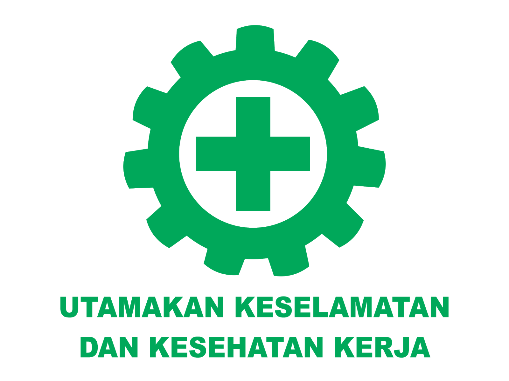

HE
LLO.
Wellcome to my portfolio
K3 BASIC
Kesehatan dan Keselamatan Kerja (K3) merupakan salah satu upaya untuk menciptakan tempat kerja yang aman, sehat, bebas dari pencemaran lingkungan, sehingga dapat mengurangi dan atau bebas dari kecelakaan kerja dan penyakit akibat kerja yang pada akhirnya dapat meningkatkan efisiensi dan produktivitas kerja. Tempat Kerja Menurut undang-undang No. 1 Tahun 1970 tentang Keselamatan Kerja, yang dimaksud dengan tempat kerja adalah setiap ruangan atau lapangan, tertutup atau terbuka, bergerak atau tetap, dimana tenaga kerja bekerja atau yang sering dimasuki tenaga kerja untuk keperluan suatu usaha dan dimana terdapat sumber atau sumber-sumber bahaya baik di darat, di dalam tanah, di permukaan air, di dalam air maupun di udara yang berada di dalam wilayah kekuasaan hokum republik indonesia. Kemudian dalam penjelasannya pada pasal 1 ayat (1), dengan perumusan ini, maka ruang lingkup dari UU tersebut jelas ditentukan oleh 3 unsur yaitu: Tempat dimana dilakukan pekerjaan bagi suatu usaha. Adanya tenaga kerja yang bekerja. Adanya bahaya dan resiko kerja yang ada di tempat kerja. Keselamatan kerja Menurut Widodo Siswowardojo (2003), keselamatan kerja adalah : Keselamatan dan Kesehatan kerja secara definitif dikatakan merupakan daya dan upaya yang terencana untuk mencegah terjadinya musibah kecelakaan ataupun penyakit akibat kerja. Menurut Suma’mur (1996), keselamatan kerja adalah : Keselamatan yang berkaitan dengan mesin, pesawat, alat kerja, bahan dan proses pengolahannya, landasan tempat kerja dan lingkungannya serta cara-cara melakukan pekerjaan. Pendapat-pendapat diatas dapat diambil kesimpulan bahwa keselamatan kerja merupakan suatu program perlindungan terhadap karyawan pada saat bekerja dan berada di dalam lingkungan tempat kerja dari resiko kecelakaan dan kerusakan mesin atau alat kerja untuk berusaha mencegah dan menimbulkan atau bahkan menghilangkan sebab terjadinya kecelakaan. Kesehatan Kerja Menurut Widodo Siswowardojo (2003), kesehatan kerja adalah Peningkatan dan memelihara derajat kesehatan tenaga kerja setinggi-tingginya, baik fisik, mental maupun sosial, mencegah dan melindungi tenaga kerja terhadap gangguan kesehatan akibat lingkungan kerja dan faktor-faktor lain yang berbahaya, menempatkan tenaga kerja dalam suatu lingkungan yang sesuai dengan faal dan jiwa serta pendidikannya, meningkatkan efisiensi kerja dan produktivitas, serta mengusahakan agar masyarakat lingkungan sekitar perusahaan terhindar dari bahaya pencemaran akibat proses produksi, bahan bangunan, dan sisa produksi. Sedangkan menurut Suma’mur (1996), berpendapat bahwa kesehatan kerja adalah : Spesialisasi dari ilmu kesehatan atau kedokteran beserta prakteknya yang bertujuan agar pekerja ataupun masyarakat memperoleh derajat kesehatan yang setinggi-tingginya baik fisik, mental maupun sosial, denagn usaha-usaha preventif dan kuratif terhadap faktor-faktor pekerjaan, lingkungan kerja dan terhadap penyakit umum. Pendapat-pendapat diatas dapat disimpulkan bahwa kesehatan kerja merupakan suatu kondisi dilingkungan kerja yang bebas dari penyakit fisik dan mental. Perusahaan menjalankan program kesehatan kerja untuk menjaga kesehatan kerja karyawannya secara fisik dan mental agar produktivitas mereka dapat pula terjaga dan meningkat. Keselamatan dan Kesehatan Kerja Keselamatan dan Kesehatan Kerja (K3) secara filosofi adalah suatu pemikiran dan upaya untuk menjamin keutuhan dan kesempurnaan baik jasmaniah maupun rohaniah tenaga kerja pada khususnya dan manusia pada umumnya. Secara disiplin ilmu, Keselamatan dan Kesehatan Kerja diartikan sebagai “ilmu dan penerapannya secara teknis dan teknologis untuk melakukan pencegahan terhadap munculnya kecelakaan kerja dan penyakit akibat kerja dari setiap pekerjaan yang dilakukan”. Secara hukum, Keselamatan dan Kesehatan Kerja diartikan sebagai “Suatu upaya perlindungan agar setiap tenaga kerja dan orang lain yang memasuki tempat kerja senantiasa dalam keaaan yang sehat dan selamat serta sumbersumber proses produksi dapat dijalankan secara aman, efisien dan produktif”. Ditinjau dari segi ilmu pengetahuan dan penerapannya dalam usaha mencegah kemungkinan terjadinya kecelakaan dan penyakit akibat kerja. Keselamatan dan Kesehatan Kerja (K3) merupakan skala prioritas, karena dalam pelaksanaannya, selain dilandasi oleh peraturan perundang-undangan tetapi juga dilandasi oleh ilmu-ilmu tertentu, terutama ilmu keteknikan dan ilmu kedokteran. Adapun tujuan dari keselamatan dan kesehatan kerja menurut antara lain : Melindungi tenaga kerja atas hak keselamatan dalam melakukan pekerjaan untuk kesejahteraan hidup dan meningkatakan produksi serta produktivitas nasional. Menjamin keselamatan setiap orang yang berada di tempat kerja. Sumber produksi dipelihara dan dipergunakan secara aman. Potensi Bahaya Potensi bahaya adalah suatu keadaan yang memungkinkan atau berpotensi terhadap terjadinya kecelakaan berupa cedera, penyakit, kematian, kerusakan atau kemampuan melaksanakan fungsi operasional yang telah ditetapkan. Identifikasi Potensi Bahaya Identifikasi potensi bahaya merupakan suatu proses aktivitas yang dilakukan untuk mengenali seluruh situasi atau kejadian yang berpotensi sebagai penyebab terjadinya kecelakaan dan penyakit akibat kerja yang mungkin timbul di tempat kerja. Inspeksi Keselamatan dan Kesehatan Kerja Inspeksi Keselamatan dan Kesehatan Kerja (Inspeksi K3) adalah Suatu aktivitas untuk menemukan masalah-masalah atau potensi bahaya dan menilai resikonya sebelum kerugian atau kecelakaan dan penyakit akibat kerja benarbenar terjadi. Inspeksi Keselamatan dan Kesehatan Kerja dapat dibedakan menjadi 2, yaitu : a. Inspeksi Informal Inspeksi Informal merupakan inspeksi yang tidak direncanakan sebelumnya dan sifatnya cukup sederhana yang dilakukan atas kesadaran orang-orang yang menemukan atau melihat masalah K3 di dalam pekerjaannya sehari-hari. Inspeksi ini cukup efektif karena masalah-masalah yang muncul langsung dapat dideteksi, dilaporkan dan segera dapat dilakukan tindakan korektif. b.Inspeksi Rutin/Umum Inspeksi Rutin/Umum biasanya dilakukan dengan cara walk-trough survey ke seluruh area kerja dan bersifat komprehensif.